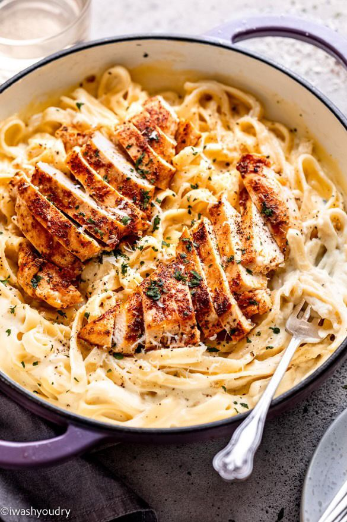

Home
Chicken Alfredo Penne

When it comes to finding comfort in food, italian cuisine reigns supreme. There's something inherently soothing about steaming bowls of pasta tossed in creamy, decadent sauce. If you yearning to recreate
that cosy italian restaurant experience right in your kitchen, we've got you covered. This recipe combines the creamy richness of Alfredo sauce with perfectly cooked penne pasta and tender, juicy chicken.
Each bite is a soothing and satisfying mix of flavours that will transport you straight to Italy. So go ahead, whip up this easy chicken alfredo penne and before you know it, you'll be exclaiming
'mangia!' with every delightful bite.
Ingredients
For 6 servings
- 2 tablespoon unsalted butter
- 680 grams boneless, skinless chicken breasts, cubed
- 1/2 teaspoon dried oregano
- 1/2 teaspoon dried basil
- 1/2 teaspoon kosher salt
- 1/2 teaspoon freshly ground black pepper
- 455 grams penne pasta, cooked and drained
- 1/4 cup fresh parsley
- 1/4 cup shredded parmesan cheese
Sauce
- 2 tablespoons unsalted butter
- 4 cloves garlic, minced
- 3 tanlespoons all-purpose flour
- 2 cups milk
- 1/2 teaspoon kosher salt
- 1/2 teaspoon freshly ground black pepper
- 1/2 teaspoon dried basil
- 1/2 teaspoon dried basil
- 1/2 cup shredded parmesan cheese
Preparation
- Melt the butter in a large pan over medium-high heat, then add the chicken breasts. Season with the salt, pepper, oregano and basil. Cook 8-10 minutes, or until the chicken is fully cooked.
Remove the chicken from the pan and set aside.
- Make the sauce: In the same pan over medium heat, melt the butter, then add the garlic. Cook until the garlic begins to soften. Stir in half of the flour at a time until incorporated.
Gradually add the milk, stirring between additions and cook until fully incorporated and the sauce begins to thicken. Season with the salt, pepper, oregano and basil. Add the Parmesan cheese and stir until
melted.
- In a large bowl, pour the sauce over cooked penne pasta, then add the chicken and toss well to combine. Add the parsley and Parmesan and toss again.
Serve And Enjoy
For more Recipes:
Chocolate Brownies
Chocolate Chip Cookies
Eggs Benedict